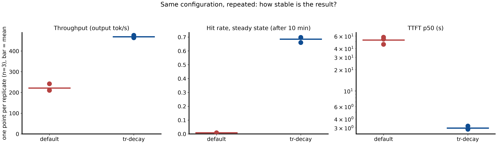
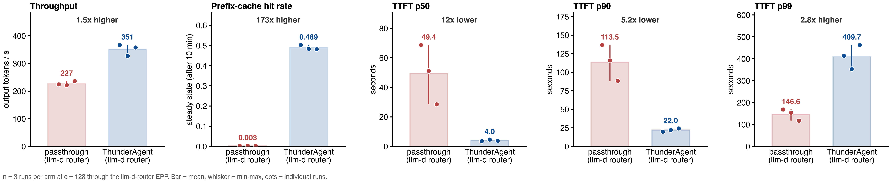
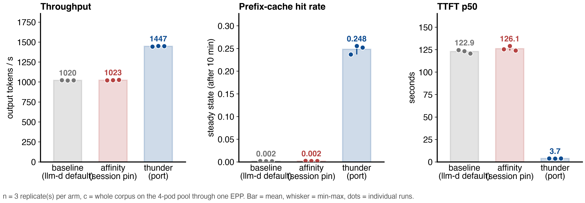
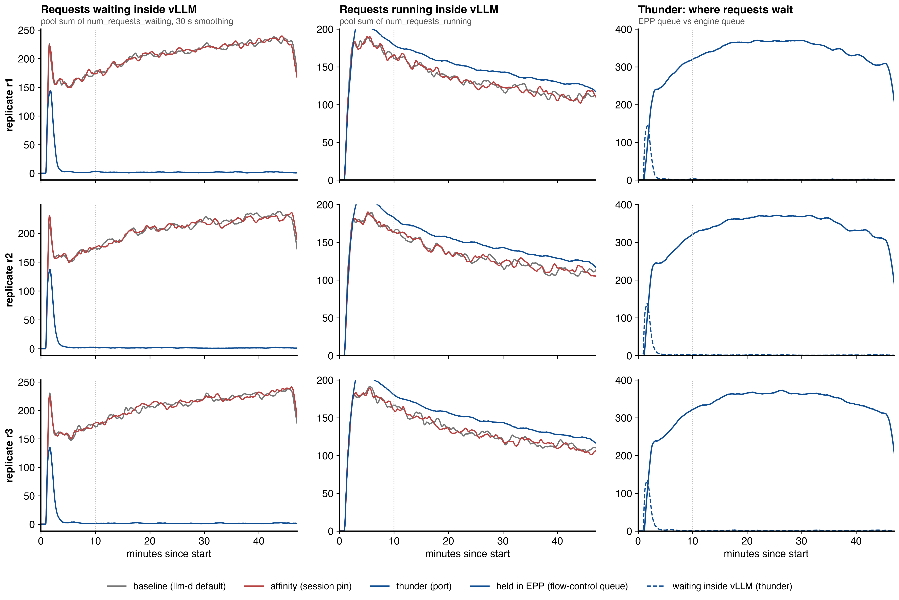
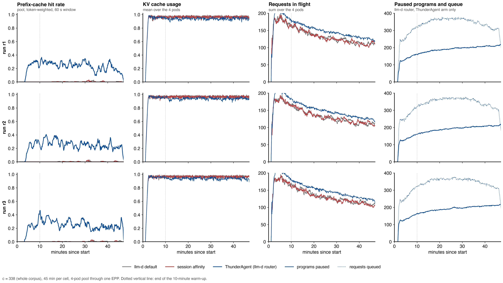

Hold sessions in the router, so the ones on the GPU keep their prefix cache.
x-session-idBetween turns the engine sees the session as idle. Its KV blocks are still valuable.
2^-tEngine KV utilization cannot do this. It counts running requests only; idle sessions look free.
Saturation hook, per pod, at most every pauseSweepSeconds. No background thread.session-state-producer of llm-d-router issue 2524, plus the KV fields.- type: agent-identity
parameters:
additionalSessionHeaders: [x-session-id]
- type: thunder-agent
name: thunder
parameters:
capacityTokens: 2237040 # fallback; real value scraped
utilThreshold: 1.0
actingHalfLifeSeconds: 1
bufferTokensPerProgram: 100
pauseSweepSeconds: 5
headWaitStarvationMs: 1800000
evictionTtlSeconds: 3600
sessionFinalHeader: x-session-final
flowControl:
defaultRequestTTL: "0s" # never reject a held request
saturationDetector: {pluginRef: thunder}
defaultPriorityBand: {fairnessPolicyRef: thunder}
utilThreshold, evictionTtlSeconds, a request TTL that is offQwen3-Coder-30B-A3B-FP8, vLLM v0.28.0, 2x H100 per pod, 2.24M tokens KV per pod. 338 real Claude Code sessions replayed. 45 minutes, three runs per arm.
| name | compares | pods | folder |
|---|---|---|---|
| A: ThunderAgent, 1 replica | paper's Python router, passthrough vs ThunderAgent | 1 | 08-weka-replicates |
| B: llm-d-router + ThunderAgent, 1 replica | llm-d router, passthrough vs ThunderAgent plugin | 1 | 10-llm-d-router-replicates |
| C: llm-d-router + ThunderAgent, 4 replicas | llm-d default vs session affinity vs ThunderAgent plugin | 4 | 12-llm-d-router-pool |





| # | limitation | measured | one improvement |
|---|---|---|---|
| 1 | Resumed sessions move between pods | C: 70% of resumes, hit rate 0.25 vs 0.49 | resumePlacement: origin-only; later decide by cost of a move |
| 2 | A few sessions wait very long | C: 55 forced admissions, p99 1231 s | hold only while the prefix is still cached |
| 3 | KV footprint is an estimate | about 7 bytes per token | engine KV usage now, KV block index later |
| 4 | No active-active EPP | not measured | pin a session to one EPP; then a shared ledger |
| 5 | Chat and agentic not separated | not measured | own priority band for chat, count its KV |
| 6 | Benchmarks are narrow | one model, request percentiles | goodput and session SLO metrics, a large dense model |
| 7 | No CPU KV offloading test | not measured | benchmark with the CPU tier; make the ledger tier-aware |
| 8 | No prefill/decode test | not measured | bind to the decode pod, gate on decode KV |
| 9 | Held demand only waits | C: 180 sessions paused, 4 pods of demand | autoscaling signal from ThunderAgent: held_tokens, demand_pods |
proposal/LLM-D-THUNDERAGENT-PROPOSAL.md, steps 08, 10, 12llm-d-router pkg/epp/framework/plugins/thunderagent